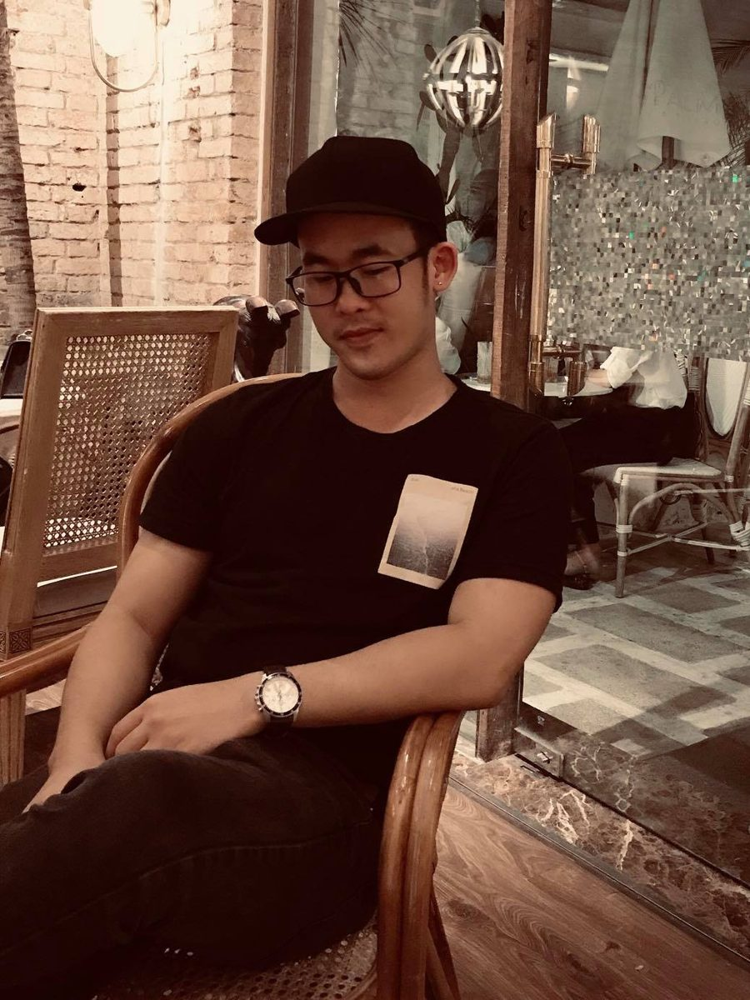

Tôi là Quang, làm thiết kế và chụp ảnh ở Sài Gòn.
Sinh năm 1996 ở Quảng Trị. Tôi bắt đầu bằng nghề chụp ảnh cưới, rồi làm 7 năm thiết kế tranh gạch 3D và mỹ thuật công nghiệp cho biệt thự, căn hộ — công việc buộc phải hiểu màu sắc từ màn hình đến bản in, và làm quen với việc sản xuất số lượng lớn.
Từ 2024 tôi làm thêm cho một công ty ở Đan Mạch (thiết kế in, chụp sản phẩm nông nghiệp), và từ 2025 phụ trách hình ảnh truyền thông tại Nhã Đạt — công ty phát triển nhà ở với hơn 20 năm kinh nghiệm — cho hai dự án Ny'ah Phú Định và Villa Ny'ah: quay chụp, social post, sự kiện, quản lý kho tư liệu, và phối hợp với marketing trong từng chiến dịch.
Tôi cũng "vibe code" cùng AI để tự dựng những thứ công việc cần mà không chờ ai: chatbot bán hàng kèm live slide cho sales gallery, sàn tin bất động sản gom từ 5 nguồn (NhaDat Radar), landing page cho dự án, và các script nhỏ như lọc ảnh trùng, lên lịch đăng bài, dựng video ngắn hàng loạt. Không phải lập trình viên chuyên nghiệp — nhưng sản phẩm đang chạy thật.
- ỞTP.HCM · quê Quảng Trị
- Học vấnĐH Giao thông Vận tải TP.HCM (2 năm)
- Ngoại ngữTiếng Anh (IELTS), tiếng Trung cơ bản
- Hiện tạiNhã Đạt — dự án Ny'ah Phú Định
Kinh nghiệm
-
2025 — nay
Nhã Đạt — Hình ảnh & nội dung truyền thông
Phụ trách hình ảnh và nội dung cho Ny'ah Phú Định (compound & shophouse 50 căn, quận 8) và Villa Ny'ah (villa nghỉ dưỡng ven sông Cầu Tràm). Việc hằng ngày: chụp kiến trúc, nội thất nhà mẫu và quay dựng video; thiết kế social post theo lịch chiến dịch; triển khai sự kiện mở bán, tham quan nhà mẫu (backdrop, ấn phẩm, ghi hình); quản lý và đặt tên kho ảnh — video cho cả đội dùng chung; tự dựng chatbot AI trả lời khách và hệ thống live slide cho sales gallery, landing page Villa Ny'ah, cùng công cụ lên lịch đăng bài và dựng video ngắn hàng loạt; phối hợp với marketing và sales để ra nội dung đúng tiến độ bán hàng.
-
2024 — 2025
Axel Münsson A/S, Đan Mạch — Freelance designer
Thiết kế sản phẩm in theo yêu cầu (áo, poster), bao bì và nhãn; chụp ảnh sản phẩm nông nghiệp và nông trại; sắp xếp kho ảnh truyền thông. Làm việc từ xa, trao đổi bằng tiếng Anh.
-
2022 — 2024
Piramic Saigon — Thiết kế đồ họa & mỹ thuật công nghiệp
Thiết kế tranh gạch 3D và tranh trang trí cho nội thất cao cấp; xây dựng và quản lý thư viện hơn 200 mẫu; làm việc trực tiếp với xưởng để khớp màu giữa thiết kế và sản phẩm.
-
2017 — 2022
Đức Phát — Thiết kế đồ họa & mỹ thuật công nghiệp
Thiết kế gạch 3D và tranh tường cho biệt thự, căn hộ; kiểm soát màu in; hỗ trợ khách chọn mẫu và phối cảnh.
-
2017 — 2018
Viễn Đông Wedding Studio — Nhiếp ảnh
Chụp ảnh cưới studio và ngoại cảnh, hậu kỳ, retouch và in album.
Kỹ năng & công cụ
Thiết kế & hình ảnh
Code & tự động hóa
Ngôn ngữ